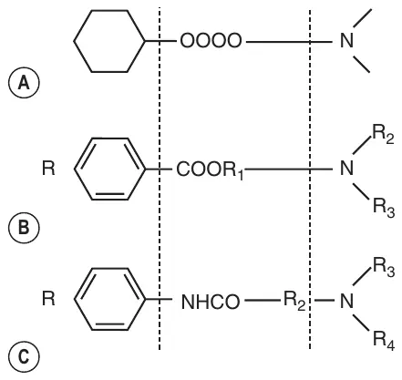

نسخه استخراجشده؛ ترجمه یا تأیید علمی انجام نشده است. وضعیت: captured
مرد ۵۸ سالهای با سیروز کبدی برای کشیدن دو دندان آمده است. استادت میگوید: «آرتیکائین بزن و از کمترین حجم مؤثر بیشتر نرو.» چرا آرتیکائین، و چرا کمترین حجم؟

بیشتر داروها باید به خون برسند تا اثر کنند؛ بیحسی موضعی برعکس است: وقتی جذب خون شود، اثرش تمام میشود. تقریباً همهی بیحسیها رگهای محل تزریق را گشاد میکنند و پروکائین قویترین گشادکننده است؛ کوکائین تنها بیحسیای است که بهطور پایدار رگ را تنگ میکند. گشادی رگ جذب را تند میکند: بیحسی کوتاهتر و سطحیتر، و سطح خونی بالاتر. تنگکنندهی رگ، مثل اپینفرین، برای همین به کارپول افزوده میشود.
بیماری شدید کبد یا نارسایی قلبی (ASA IV یا V در طبقهبندی وضعیت جسمی، یعنی بیماری شدیدی که زندگی را تهدید میکند) منع نسبی آمیدهاست: یعنی دارو را با سنجیدن سود و خطر و با کمترین دوز مؤثر میزنی.
دارو پس از جذب به همهی بدن میرود. اندامهای پرخون (مغز، کبد، کلیه، ریه) زودتر سطح بالا میگیرند، ولی عضلهی اسکلتی چون بزرگترین تودهی بافتی است، بیشترین مقدار دارو را در خود دارد. همهی بیحسیها از سد خونیـمغزی و از جفت میگذرند. در نارسایی قلبی توزیع دارو از خون به بافتها کندتر است و سطح خونی بالاتر میماند.
نیمهعمر حذف زمانی است که سطح خونی نصف شود. پس از دو نیمهعمر ۷۵٪، سه نیمهعمر ۸۷٫۵٪، چهار نیمهعمر ۹۴٪ و پنج نیمهعمر ۹۷٪ دارو از خون رفته است.
پریلوکائین خودش متهموگلوبینمی نمیدهد؛ متابولیتش، ارتو-تولوئیدین، هموگلوبین را به متهموگلوبین تبدیل میکند و خطر با دوزهای بالا است. متابولیتها در نارسایی کلیه یا قلب و در تجویز طولانی بیشتر در خون انباشته میشوند.
کلیه اندام اصلی دفع است. استرها تقریباً کامل در پلاسما تجزیه میشوند و مقدار بسیار کمی از داروی مادر در ادرار میآید؛ از لیدوکائین هم کمتر از ۳٪ بیتغییر دفع میشود. بیماری شدید کلیه (ASA IV یا V، از جمله بیمار دیالیزی) منع نسبی است.
اشتباه رایج: فکر اینکه نیمهعمر کوتاه آرتیکائین بیحسی را کوتاه میکند. نیمهعمر از وقتی شمرده میشود که دارو وارد خون شده؛ مدت بیحسی به دارو و تنگکنندهی کارپول بستگی دارد.